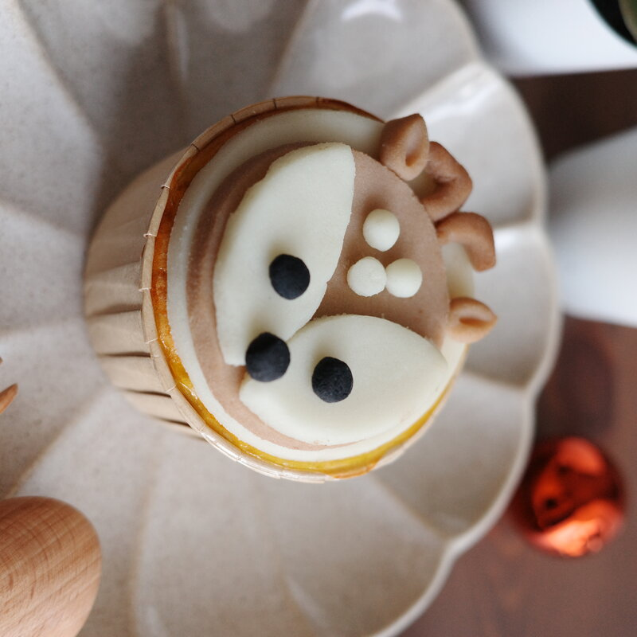

When you open a PawPa Pastry box, you're looking at something that took a lot more time and care than a standard pet treat. Every cupcake is made entirely by hand, from scratch, for your specific order. No batch manufacturing. No sitting on a shelf. Just fresh, real food made for your pet.
Here's exactly what goes into making each one.
"We started PawPa Pastry because we believe our furry kids deserve the same care and quality we give ourselves."
It Starts with the Ingredients
Before anything gets baked, we source everything fresh. Our base is always real chicken or fish — not dried, not powdered, not processed. We use eggs as a natural binder, a small amount of coconut oil for moisture, and a touch of honey for natural sweetness.
That's it for the base. No flour, no artificial flavouring, no preservatives. The cake itself is essentially a savoury protein base that dogs find genuinely delicious — we know because we've watched enough dogs inhale them in under ten seconds.
The Making Process
Mixing the base
Fresh chicken or fish is blended with egg, a small amount of coconut oil, and honey to create a smooth, consistent batter. Every batch is mixed by hand and checked for texture before going into the oven.
Baking
The cupcakes bake in individual paper cups at a controlled temperature to ensure an even cook with no dry edges. Bake time varies slightly depending on the size of the order — 2-piece sets and 4-piece sets are baked separately to maintain consistency.
Making the fondant
This is the part that takes the most time. Our fondant is made from pet goat milk — specially formulated for pets and more digestible than regular dairy — combined with natural fruit and vegetable powders for colour. Beetroot gives us pink and red. Spinach gives green. Turmeric gives yellow. No artificial dyes, no E-numbers.
You may notice that after a day or so, some of the colours on the fondant start to shift slightly — a pink might deepen, a green might soften. This is completely normal and actually a good sign. Natural vegetable and fruit powders oxidise over time when exposed to air, just like a cut apple turning brown. It's not spoilage — it's proof that the colour came from real food, not artificial dye. Artificial food colouring doesn't change colour because it's chemically stable; natural powder does, because it's genuinely natural. If you ever notice the colours on your PawPa Pastry order looking a little different the next day, that's exactly what you'd hope to see.
Hand-shaping the decorations
Every snowman face, every reindeer ear, every fondant letter — all shaped by hand. This is the most time-consuming part of the process and also the part we love most. It's what makes each cupcake feel personal rather than produced.
Assembly and quality check
Once cooled, the fondant topper is placed on the cupcake and the full order is checked before packing. We don't pack anything we wouldn't be happy to give to our own dog.

Each decoration is shaped entirely by hand — no moulds, no shortcuts.
Why We Make to Order
We don't pre-make and store batches. Every order is baked fresh after you place it. This means your pet's treat has no preservatives — because it doesn't need any. It'll be eaten within a day or two, as it should be.
It also means we can personalise. Want your dog's name on the fondant? We can do that. Specific size? Let us know. This flexibility is only possible because we're not running an assembly line.
The Part That Can't Be Measured
There's something about making food for someone's pet that feels genuinely meaningful. These are family members. They can't order their own birthday cake or tell you what they want. Their humans do that for them — and we think that act of care deserves to be met with equal care on our end.
That's why we do this the slow way. 🐾
Want to see the result?
Browse our menu and order a freshly made treat for your fur baby.
💬 Order on WhatsApp